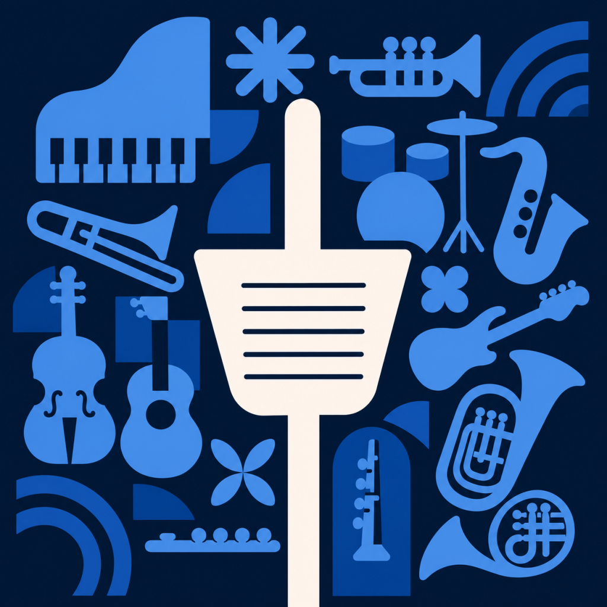

OwnMetronom

OwnMetronom
Preparing for release
Your metronome. Your tuner. Your style.
Use your own photo or favorite colors to make the metronome and tuner yours. Move the weight to set the tempo, just like a traditional pendulum metronome: simple, familiar controls. You can also record your practice and listen back.
See and hear your tempo
Move the weight up or down to set 40–208 BPM, just like a traditional pendulum metronome. Tap the large tempo readout for plus/minus adjustments in 1 BPM steps. Set a bell every 2, 3, 4, or 6 beats, or turn it off.
Check your pitch
See the note and whether it is sharp or flat. Set A=410–480 Hz or play a reference tone. Tuner audio is analyzed locally without being saved.
Use the metronome and tuner separately or together. Change the combined view’s reference pitch in the Tuner tab.
Record and listen back
Tap the microphone to start recording, then Stop to save. Name a recording and open its card in the Recordings tab to play it. Sharing and exporting happen only when you choose.
On iOS, moving the app to the background saves and stops recording. On Android, recording can continue with a recording notification. During recording, metronome sound through the device speaker is muted to keep it out of the recording. If headphones are silent, use the headphones button to enable sound.
Make it yours
Use a photo as your background, or choose background and pendulum colors. Give both the metronome and tuner a look of your own. No sign-in is needed. Settings and recordings stay on your device.
Free features and a one-time purchase
Core metronome and tuner features are free. Save up to 3 recordings; deleting one makes room for another.
Each reward earned from an optional rewarded ad adds one reusable recording slot, with no expiry in this app on this device. Restoration after uninstall, data clearing or device replacement is not guaranteed. Playing a recording does not trigger a full-screen ad.
An optional one-time purchase removes ads and the recording-count limit. It is not a subscription. The Japanese price is JPY 500; see the purchase screen for your local price. Restore purchases with the same store account. Free device storage is still required.